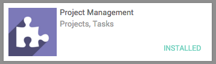
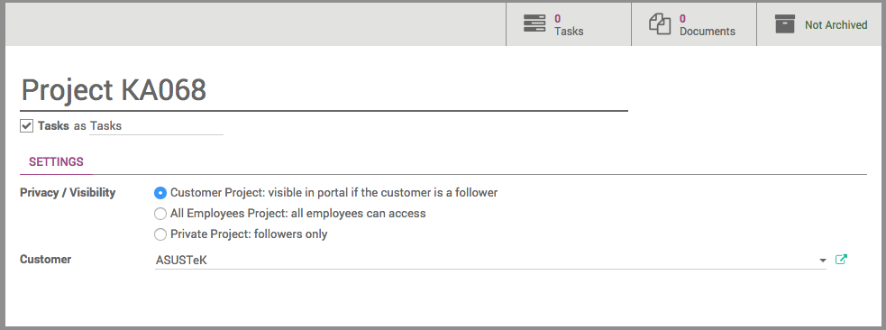
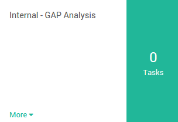
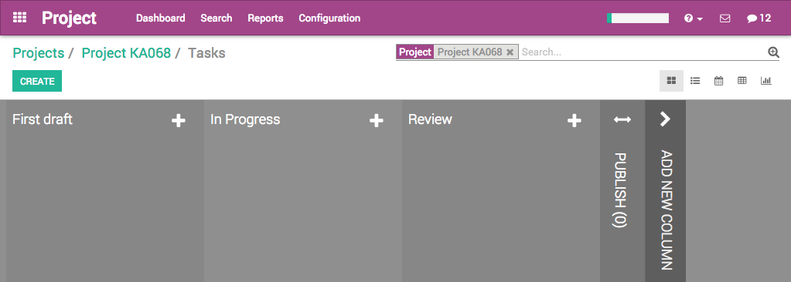
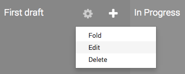

概述
YuanCloud项目允许你和整个项目团队一起管理项目，与项目和任务成员中的任何一个人沟通。
It works with projects containing tasks following customizable stages. A can be internal or customer-oriented. A task is something to perform as part of a project. You will be able to give different tasks to several employees working on this project.
安装项目管理模块
Open the Apps module, search for Project Management, and click on Install.
创建一个新的项目
Open the Project application, and click on Create. From this window, you can specify the name of the project and set up the privacy of the project.
隐私设置如：
[UNKNOWN NODE problematic]客户项目 [UNKNOWN NODE problematic]：如果该客户是一个关注者那么就可以在门户中看到。
所有员工:员工能看到所有的任务或者问题。
** 私有项目**：只有关注者能看到的任务或者问题
如果某个项目有特定的客户，就可以在项目中标明；如果不是客户的项目，那么**客户**字段留空。
输完所有必要的详细信息之后，点击**保存**。
自定义项目阶段
创建自定义的项目阶段
在你项目仪表盘上。点击**＃任务**。
In the new window, add a new column and name it according to the first stage of your project, then add as many columns as there are stages in your project.
For each stage, there are markers for the status of tasks within a stage, that you can personalize to fit your needs.
Drag your mouse pointer over a stage name, and click on the appearing bearing, and on the opening menu, click on Edit.
A new window will open. The color dots and star icon correspond to customizable markers applied on tasks, making it easier to know what task requires attention. You can give them any signification you like.

完成的时候点击 保存 。
调整项目阶段
You can easily personalize this view to better suit your business needs by creating new columns. From the Kanban view of your project, you can add stages by clicking on Add new column. If you want to rearrange the order of your stages, you can easily do so by dragging and dropping the column you want to move to the desired location. You can also fold or unfold your stages by using the Setting icon on your desired stage.